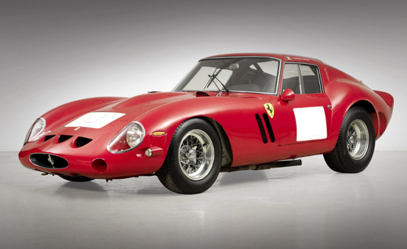

На аукціоні Sotheby’s було встановлено новий рекорд вартості для автомобілів Ferrari. За унікальний екземпляр спорткара 250 GTO 1962 року покупець заплатив $51,7 млн.
Спочатку вважалося, що ціна може досягти $60 млн, проте торги завершилися на позначці $47 млн, а з урахуванням зборів — $51,7 млн. Це найбільша вартість, в яку коли-небудь оцінювали автомобіль марки Ferrari. Попередній рекорд був встановлений такою ж моделлю 250 GTO у 2018 році: тоді за машину віддали $48,4 млн, включаючи збори.
Автомобіль-рекордсмен був збудований у 1962 році. У тому ж році у складі заводської команди Ferrari вона здобула перемогу в гонці «1000 км Нюрбургрингу», після чого стартувала у «24 годинах Ле-Мана», але зійшла з дистанції через перегрівання.Спочатку на машині стояв 4,0-літровий мотор V12, але після того, як вона вибула із заводської команди, її перебудували на заводі Ferrari, встановивши трилітровий мотор. Із цим двигуном у 1963 році вона була продана приватному клієнту та продовжила брати участь у перегонах.
Останній власник придбав машину у 1985 році та брав на ній участь у ралі старовинних автомобілів.Новий GTO коштував $18,000 (в США), а покупця повинен був схвалити особисто Енцо Феррарі та його представник в Північній Америці Луїджі Чинетті. В період з 1962 по 1963 рік було виготовлено 36 автомобілів. 1964 року було представлено на ринок так звану другу серію, зовнішність якої була дещо змінена. Товариство виготовило всього три таких автомобілі, а чотирьом «старим» моделям поставили новий кузов. Таким чином загальне число випуску автомобілів цієї моделі становило 39 штук.
У 2004 році журнал Sports Car International поставив 250 GTO на восьме місце в рейтингу «Найкращі автомобілі 60-х років», а журнал Motor Trend Classic назвав її «найкращою Феррарі із коли-небудь випущених». У 2012 році за повідомленням порталу autocentre.ua, автомобіль був проданий за майже 260 мільйонів гривень, що є другим найдорожчим автомобілем в історії.
У серпні 2014 року Ferrari 250 GTO, на якому в 1962 році в Монлері розбився Анрі Орейє, був проданий за 38,1 мільйона доларів.
У серпні 2018 року раритетний Ferrari 250 GTO червоного кольору був проданий за 48,4 мільйона доларів на аукціоні Sotheby's. Транспортний засіб для продажу виставлений вищим співробітником корпорацій Microsoft Грегом